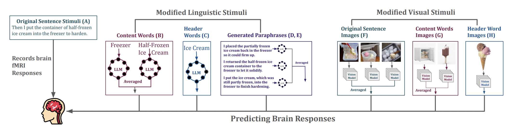
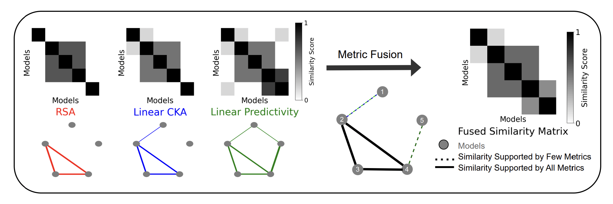
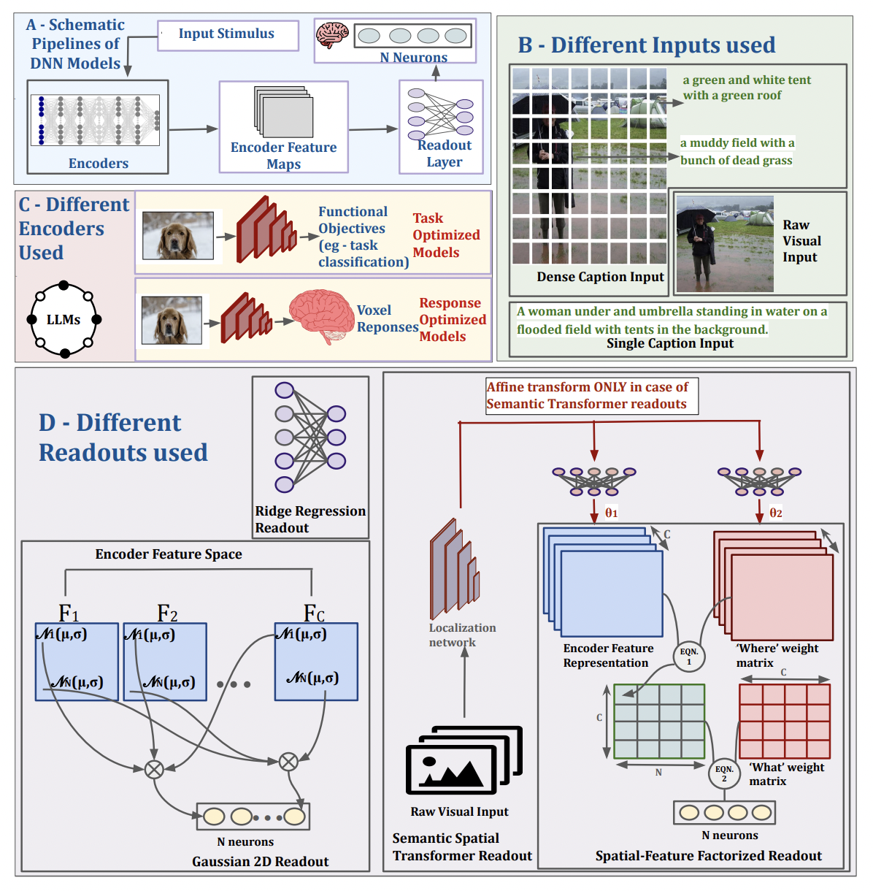

|
I am a PhD student in UCSD working with Prof. Meenakshi Khosla. My research is at the intersection of machine learning and neuroscience, focusing on how information is represented across different cortical areas of the human brain and how artificial neural networks can model these processes. I take a two-way approach: drawing inspiration from brain function to guide new computational methods, and using artificial models to probe the brain’s own mechanisms. I’m also interested in how diverse artificial systems encode information, how these representations parallel those in animal brains, and in developing a unified framework that embeds biological and artificial representations in a shared space. |

|
CV / Email / Google Scholar / LinkedIn / Twitter
| December 2025 : Our paper on measuring the Discriminative Capacity of various Representational Similarity Metrics got accepted into the Unireps 2025 workshop to be held at Neurips in San Diego. |
| November 2025: Will be presenting my work on Human Visual System Modeling at SFN (Society for Neuroscience) 2025 at San Diego. |
| August 2025: One paper on Human Visual System Modeling using DNNs got accepted into Cognitive Computational Neurocience Conference 2025. |
| Jan 2024: Started working as a PhD student at the NeuroML Lab at UC San Diego with Dr. Meenakshi Khosla. |
|
 |
Shreya Saha , Shurui Li, Greta Tuckute, Yuanning Li, Ru-Yuan Zhang, Leila Wehbe, Evelina Fedorenko, Meenakshi Khosla. In Review ICLR 2026, Information encoded in the human language cortex can be modeled from diverse representational sources that differ substantially from the original linguistic stimulus in both form and modality. |
|
 |
Jialin Wu, Shreya Saha , Yiqing Bo, Meenakshi Khosla In Review ICLR 2026, Unireps 2025 Workshop pdf / Full Paper pdf A Similarity Network Fusion based framework that integrates diverse representational metrics to reveal how architecture and training jointly shape vision models’ computational strategies beyond superficial design categories. |
|
 |
Shreya Saha , Ishaan Chadha, Meenakshi Khosla CCN 2025, SFN 2025 arxiv / Code / poster Information encoded in the human language cortex can be modeled from diverse representational sources that differ substantially from the original linguistic stimulus in both form and modality. |
Template modified from Jon Barron and Micheal Hahn |